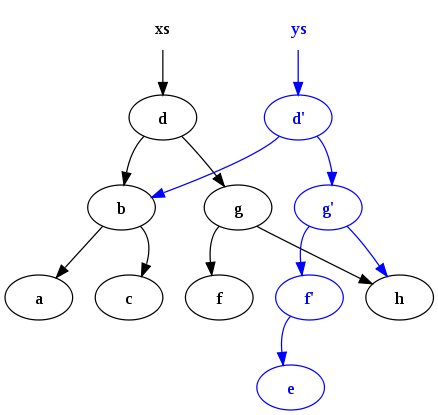

Почему Java 8 не вытеснит Scala
Линкер Николай
Лямбды - это ещё не всё ФП
ФП - это хорошо
int i = 0;
i = i++ + ++i;
// vs
final int j = 0;
final int k = j + 2;
Чему равно i? Откуда такая уверенность?
И всё-таки что такого в Scala?
- Всё есть выражение
- Функции как первоклассные значения
- Алгебраические типы данных и сопоставление по образцу
- Функциональные структуры данных
- Ленивые вычисления
- Вывод типов
- Макросы
- Оптимизации: хвостовая рекурсия и больше
- Обобщённое программирование
- Scala быстрее развивается
- Scala портабельнее
- Scala богатый источник новых идей
Вкратце про ФП
Всё есть выражение
// заглушка
def schedule(period: Long): List[Job] = ???
// определение функций, которые принимают почти всё
trait Iterable[A, Container[_]] {
def map [B] (f : A ⇒ B) : Container [B]
def filter (p : A ⇒ Boolean) : Container [A]
}
// аргументы могут быть какие-угодно
container.map(Console.println)
// return не нужен
def fun() = { "Hello" }
В Java почти все конструкции - стейтменты
Вкратце про ФП
Функции как первоклассные значения
// принимать и возвращать def flip[A1, A2, B](f: A1⇒A2⇒B): A2⇒A1⇒B = { x1 ⇒ x2 ⇒ f(x2)(x1) // анонимный экземпляр } // записать в переменную val f0 = (x: Int) ⇒ (y: String) ⇒ y * x // частично применить (карринг) val f1 = flip(f0)("Scala!") println(f1(2)) // выводит "Scala!Scala!"
Вкратце про ФП
Функции как первоклассные значения в Java 8
// принимать и возвращать public static <T, U, R> Function<U, Function<T, R>> flip(Function<T, Function<U, R>> f) { return u -> t -> f.apply(t).apply(u); } // записать в переменную MyFunction<Int, Function<String, String>> f0 = t -> u -> multiply(u, t) // частично применить (карринг) MyFunction<Integer, String> f1 = flip(f0::apply).apply("Java8"); System.out.println(f1.apply(2));// выводит "Java8Java8"Неудобно, нет функциональных типов, несовместимость интерфейсов, комбинаторный взрыв интерфейсов
Вкратце про ФП
Алгебраические типы и сопоставление по образцу
// data Expr = Var String | Number Double | UnOp String Expr | BinOp String Expr Expr sealed abstract class Expr case class Var(name: String) extends Expr case class Number(num: Double) extends Expr case class UnOp(operator: String, arg: Expr) extends Expr case class BinOp(operator: String, left: Expr, right: Expr) extends Expr val tree = BinOp("*", Var("a"), Number(0)) // функция упрощения выражения def simplify(expr: Expr): Expr = expr match { case BinOp("*", e, Number(1)) ⇒ simplify(e) case BinOp("*", e, Number(0)) ⇒ Number(0) case BinOp(op, Number(x), Number(y)) ⇒ calc(op, x, y) // инлайнинг! ... }АТД эмулируются в Java с помощью final, наследования и copy-paste. Паттерн-матчинга нет
Вкратце про ФП
Функциональные структуры данных
 В Java все коллекции изменяемые по-умолчанию. Использовать сторонние библиотеки коллекций. Неизменяемость на уровне соглашения.Вкратце про ФП
Ленивые вычисления

// ленивая инициализация
lazy val connection = openConnection(...)
// передача by name
def delayed(t: ⇒ String) = println(t)
// вызов ничем не отличается от обычного
delayed("This " + a + " takes too long")
// вычисления на ленивых списках
val naturals = Stream.from(0) // 0, 1, 2, ...
val odds = naturals.map(_ * 2 + 1) // 1, 3, 5, ...
val inverses = odds.map(1.0 / _) // 1/1, 1/3, 1/5, ...
val theSum = products.take(100).sum
Для применения ленивых вычислений
желательна поддержка языка
Вкратце про ФП *
Вывод типов
// WARNING - не пытайтесь это прочесть
final HAppend<HNil, HCons<Double, HCons<String,
HCons<Integer[], HNil>>>, HCons<Double,
HCons<String, HCons<Integer[], HNil>>>> zero = append();
final HAppend<HCons<Boolean, HNil>, HCons<Double,
HCons<String, HCons<Integer[], HNil>>>, HCons<Boolean,
HCons<Double, HCons<String, HCons<Integer[],
HNil>>>>> one = append(zero);
final HAppend<HCons<Integer, HCons<Boolean, HNil>>,
HCons<Double, HCons<String, HCons<Integer[], HNil>>>,
HCons<Integer, HCons<Boolean, HCons<Double,
HCons<String, HCons<Integer[], HNil>>>>>> two = append(one);
// реальный код
List<Integer> integers = new ArrayList<Integer>();
Map<List<Integer>,Map<Pair<String,Integer>,List<String>>>> integers = buildMap();
В Java никогда не будет вывода типов
для инициализации переменных,
последняя попытка была зарублена в 2001
Вкратце про ФП
Макросы
import scalikejdbc._, SQLInterpolation._
val id = 123
val member = sql"select id, name from members where id = ${id}"
.map(rs ⇒ Member(rs)).single.apply()
В Java популярна
генерация байт-кода O_o
Вкратце про ФП
Оптимизация хвостовой рекурсии
// TCO
@tailrec def server(request: Request): Boolean = {
if (request.isStop) true
else server(request.getNew())
}
// при компиляции будет сгенерирован while
В Java не поддерживается
Так как насчёт ФП в Java?
Трудно и ресурсоёмко. Но разбавлять императивный код можно и нужноОбобщённое программирование
def map[B, That](f: A => B)
(implicit bf: CanBuildFrom[Repr, B, That]): That
// сохраняет форму коллекции
val list = List("a", "b").map(f) // immutable list
val array = Array(1, 2, 3).map(g) // mutable array
// for comprehension работает с чем-угодно
// коллекции, Either, Option, Future, Try, ...
val table = for {
n <- array
s <- list
} yield (s + n.toString)
// затравка для любопытных
trait MyTrait { type A }
В Java такое очень ограничено.
Scala быстрее развивается
Период январь 2010 .. март 2014
- java 8
- scala-2.8 до scala-2.11-RC4
Scala портабельнее
- Работает на JVM 1.5 .. 1.8
- Просто ещё одна библиотека с точки зрения JVM
- Scala + Android = scaloid
Scala - источник новых идей
Сообщества исповедуют разные цели- Scala - основная ценность скалы - это продуктивность, тайм-ту-маркет, большинство фич подогнаны так, чтобы покрыть наибольшее количество задач наиболее эффективным для этих задач способом, при этом сохранив статическую типизацию.
- Java - основная ценность - это всепроникновение и консерватизм, Java должна быть понятна любому школьнику и Java должна поддерживать старый унаследованный код.
// Идеальный Scala-код
1.node(2.leaf, 3.node(4.leaf)) // tree
// Идеальный Java-код
/**
* Convenient proxy factory bean superclass
* for proxy factory beans that create only singletons.
*/
class AbstractSingletonProxyFactoryBean { ... }
Scala - источник новых идей
Откуда черпать?- Coursera: Functional Programming Principles in Scala
- Coursera: Reactive programming in Scala
- Книга Programming in Scala (M.Odersky, L.Spoon, B.Venners)
- Scala syntax cheat sheet
- Scala collections library
- Typesafe: Play! framework v2, Akka
- ORMs: Anorm, ScalikeJdbc, Slick
- ScalaNLP: Breeze and Epic
- Twitter: Algebird, Finagle, Cossovary, Util etc.
- Big data: Spark and Shark, Scoobi, Scalding, Scrunch
- Kojo
- http://twitter.github.io/scala_school/
- И много-много всего другого